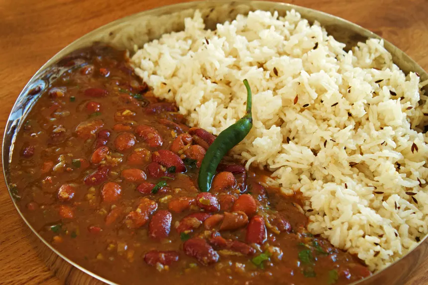

Home
Rajma Chawal

Description
Rajma Chawal is a beloved North Indian comfort food,
often considered a wholesome, hearty meal. It consists of rajma,
which are red kidney beans, and chawal, meaning rice.
The dish is simple yet flavorful,
combining the richness of kidney beans cooked in a thick,
spiced tomato-based gravy and served over steamed basmati rice.
This dish is often served with a side of pickles, yogurt, or a simple salad, and it's enjoyed by many for its comforting, homey vibe. It's a nutritious meal packed with protein and fiber from the kidney beans and offers a satisfying combination of textures and flavors. Rajma Chawal is a favorite in Indian households and is loved for its simplicity and delicious taste.
Making Rajma Chawal is relatively easy and involves preparing the rajma (kidney beans) curry and chawal (rice) separately.
Here’s a step-by-step guide to make this delicious dish:
Ingredients:
For Rajma (Kidney Beans Curry):
- 1 cup rajma (kidney beans) (soaked for 6-8 hours or overnight)
- 2 tablespoons oil
- 1 large onion (finely chopped)
- 1 tablespoon ginger-garlic paste
- 2 large tomatoes (pureed or finely chopped)
- 1-2 green chilies (optional)
- 1 teaspoon cumin seeds
- 1 teaspoon coriander powder
- 1 teaspoon cumin powder
- 1/2 teaspoon turmeric powder
- 1 teaspoon red chili powder (adjust to taste)
- 1 teaspoon garam masala
- Salt to taste
- 1/4 cup fresh cilantro (chopped, for garnishing)
- 3-4 cups water (or as needed for desired consistency)
- Lemon juice (optional, for tanginess)
For Chawal (Rice):
- 1 cup basmati rice
- 2 cups water
- 1 teaspoon ghee or oil (optional)
- Salt to taste
Instructions:
Step 1: Cook the Rajma (Kidney Beans)
- Soak the beans: Soak the kidney beans in plenty of water for at least 6-8 hours or overnight. Drain the water before cooking.
- Cook the beans: In a pressure cooker, add the soaked rajma along with about 3 cups of water and a pinch of salt. Pressure cook for 3-4 whistles (or about 15-20 minutes on medium heat) until the beans are tender. If you're using a regular pot, it might take about 1-1.5 hours to cook the beans.
- Make the curry base:
- Heat oil in a pan over medium heat. Add cumin seeds and let them splutter.
- Add the chopped onions and sauté until golden brown.
- Add the chopped tomatoes (or puree) and cook until the oil starts to separate from the masala (spice mix). This may take around 5-7 minutes.
- Add the coriander powder, cumin powder, turmeric powder, red chili powder, and salt. Mix well and cook for another 2-3 minutes.
- Add the cooked rajma: Once the beans are tender, add them to the spice mixture. Pour in some of the water in which the rajma was cooked to adjust the consistency of the gravy. Simmer for about 10-15 minutes to let the flavors blend together.
- Finish with garam masala and cilantro: Add garam masala and mix. Cook for another 2-3 minutes, then garnish with freshly chopped cilantro. If you like, you can also add a squeeze of lemon juice for extra flavor.
Step 2: Cook the Chawal (Rice)
- Rinse the rice: Wash the basmati rice thoroughly under cold water until the water runs clear. This helps remove excess starch.
- Cook the rice: In a pot, add 2 cups of water for every cup of rice. Add the rice, a pinch of salt, and a teaspoon of ghee or oil (optional). Bring to a boil, then reduce the heat to low and cover the pot. Let it simmer for 10-12 minutes, or until the rice is fully cooked and the water is absorbed.
- Alternatively, you can cook rice in a rice cooker or pressure cooker with the same water-to-rice ratio.
Step 3: Serve
- Plate the rice: Once the rice is cooked, fluff it with a fork to separate the grains.
- Serve: Serve a generous portion of rajma (kidney beans curry) on top of the rice, and enjoy with a side of pickle, yogurt, or a fresh salad.
Tips:
- If you prefer a smoother gravy, you can blend the curry base after cooking the onions and tomatoes, then return it to the pan and add the cooked rajma.
- For a richer taste, you can add a tablespoon of cream or yogurt to the curry while cooking.
- You can adjust the spice levels according to your preference by adding more or less chili powder and green chilies.
Enjoy your comforting Rajma Chawal!